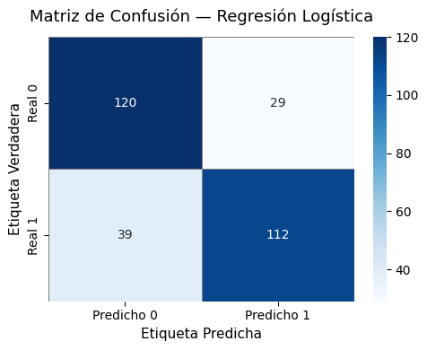
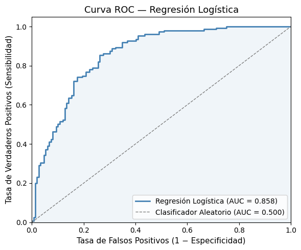
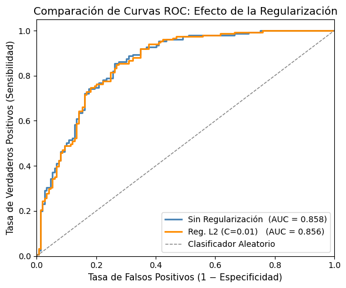

12-1 Métricas de Evaluación para Regresión Logística#
Curso: Modelos de Análisis Estadístico — Universidad de los Andes
Profesora: Alejandra Tabares
Introducción#
Una vez ajustado un modelo de regresión logística, es necesario evaluar qué tan bien clasifica nuevas observaciones. A diferencia de la regresión lineal, donde podemos apoyarnos en \(R^2\) o el RMSE, los modelos de clasificación requieren un conjunto de herramientas diferente.
El punto de partida para evaluar cualquier clasificador binario es la matriz de confusión, que tabula las predicciones del modelo frente a las etiquetas de clase verdaderas en cuatro categorías:
Predicho Positivo |
Predicho Negativo |
|
|---|---|---|
Real Positivo |
Verdadero Positivo (TP) |
Falso Negativo (FN) |
Real Negativo |
Falso Positivo (FP) |
Verdadero Negativo (TN) |
Verdadero Positivo (TP): el modelo predijo correctamente la clase positiva.
Verdadero Negativo (TN): el modelo predijo correctamente la clase negativa.
Falso Positivo (FP): el modelo predijo positivo, pero la etiqueta verdadera es negativa (error de Tipo I).
Falso Negativo (FN): el modelo predijo negativo, pero la etiqueta verdadera es positiva (error de Tipo II).
El umbral de clasificación por defecto en sklearn es 0.5: si \(\hat{p} \geq 0.5\), predice la clase 1; de lo contrario predice la clase 0.
# ── Importaciones ──────────────────────────────────────────────────
import numpy as np
import pandas as pd
import matplotlib.pyplot as plt
import seaborn as sns
from sklearn.datasets import make_classification
from sklearn.linear_model import LogisticRegression
from sklearn.model_selection import train_test_split
from sklearn.metrics import (
confusion_matrix,
classification_report,
roc_curve,
roc_auc_score,
ConfusionMatrixDisplay,
)
np.random.seed(42)
print("Bibliotecas cargadas exitosamente.")
Bibliotecas cargadas exitosamente.
1. Generación de Datos Sintéticos y Ajuste del Modelo de Regresión Logística#
Simulamos un conjunto de datos de clasificación binaria con 1,000 observaciones y 5 características informativas. El conjunto de datos se divide en un conjunto de entrenamiento (70 %) y un conjunto de prueba (30 %).
# ── Simular datos ─────────────────────────────────────────────────────
X, y = make_classification(
n_samples=1000,
n_features=10,
n_informative=5,
n_redundant=2,
n_classes=2,
class_sep=0.8,
random_state=42,
)
X_train, X_test, y_train, y_test = train_test_split(
X, y, test_size=0.30, random_state=42, stratify=y
)
print(f"Muestras de entrenamiento : {X_train.shape[0]}")
print(f"Muestras de prueba : {X_test.shape[0]}")
print(f"Balance de clases (prueba) — 0: {(y_test==0).sum()}, 1: {(y_test==1).sum()}")
Muestras de entrenamiento : 700
Muestras de prueba : 300
Balance de clases (prueba) — 0: 149, 1: 151
# ── Ajustar regresión logística (sin regularización — C muy grande) ────────────────
model = LogisticRegression(C=1e6, max_iter=1000, random_state=42)
model.fit(X_train, y_train)
y_pred = model.predict(X_test) # predicciones de clase dura
y_prob = model.predict_proba(X_test)[:, 1] # probabilidades predichas para la clase 1
print("Modelo ajustado.")
print(f"Primeras 10 probabilidades predichas: {np.round(y_prob[:10], 3)}")
Modelo ajustado.
Primeras 10 probabilidades predichas: [0.449 0.886 0.962 0.668 0.313 0.495 0.388 0.425 0.483 0.118]
2. Matriz de Confusión#
La matriz de confusión proporciona una imagen completa del desempeño del clasificador en cada clase. Calculemos la matriz y visualicémosla como un mapa de calor.
# ── Calcular la matriz de confusión ──────────────────────────────────
cm = confusion_matrix(y_test, y_pred)
print("Matriz de Confusión:")
print(cm)
tn, fp, fn, tp = cm.ravel()
print(f"\nTN={tn} FP={fp} FN={fn} TP={tp}")
Matriz de Confusión:
[[120 29]
[ 39 112]]
TN=120 FP=29 FN=39 TP=112
# ── Visualizar la matriz de confusión ────────────────────────────────
fig, ax = plt.subplots(figsize=(5, 4))
sns.heatmap(
cm,
annot=True,
fmt="d",
cmap="Blues",
xticklabels=["Predicho 0", "Predicho 1"],
yticklabels=["Real 0", "Real 1"],
ax=ax,
linewidths=0.5,
linecolor="gray",
)
ax.set_title("Matriz de Confusión — Regresión Logística", fontsize=13, pad=12)
ax.set_ylabel("Etiqueta Verdadera", fontsize=11)
ax.set_xlabel("Etiqueta Predicha", fontsize=11)
plt.tight_layout()
plt.show()

3. Métricas de Clasificación: Exactitud, Precisión, Exhaustividad, F1-Score#
A partir de las cuatro celdas de la matriz de confusión podemos derivar las siguientes métricas escalares:
Compromiso clave: La Precisión y la Exhaustividad suelen moverse en direcciones opuestas. En diagnóstico médico típicamente se prioriza la Exhaustividad (evitar pasar por alto pacientes enfermos), mientras que en filtrado de spam se puede priorizar la Precisión (evitar marcar correos legítimos como spam). El F1-Score proporciona un resumen equilibrado único cuando ambos tipos de error tienen costos similares.
Nota: La exactitud puede ser engañosa cuando las clases están desbalanceadas. Por ejemplo, si el 95 % de las observaciones pertenecen a la clase 0, un modelo que siempre predice 0 alcanza el 95 % de exactitud siendo completamente inútil para detectar la clase 1.
# ── Calcular métricas manualmente a partir de la matriz de confusión ────────
accuracy = (tp + tn) / (tp + tn + fp + fn)
precision = tp / (tp + fp)
recall = tp / (tp + fn)
specificity = tn / (tn + fp)
f1 = 2 * precision * recall / (precision + recall)
print("Cálculo manual a partir de la matriz de confusión:")
print(f" Exactitud : {accuracy:.4f}")
print(f" Precisión : {precision:.4f}")
print(f" Exhaustividad: {recall:.4f}")
print(f" Especificidad: {specificity:.4f}")
print(f" F1-Score : {f1:.4f}")
Cálculo manual a partir de la matriz de confusión:
Exactitud : 0.7733
Precisión : 0.7943
Exhaustividad: 0.7417
Especificidad: 0.8054
F1-Score : 0.7671
# ── Reporte de clasificación de sklearn ───────────────────────────────
print("Reporte de Clasificación (sklearn):")
print(classification_report(y_test, y_pred, target_names=["Clase 0", "Clase 1"]))
Reporte de Clasificación (sklearn):
precision recall f1-score support
Clase 0 0.75 0.81 0.78 149
Clase 1 0.79 0.74 0.77 151
accuracy 0.77 300
macro avg 0.77 0.77 0.77 300
weighted avg 0.77 0.77 0.77 300
El classification_report proporciona precisión, exhaustividad y F1-score para cada clase, así como promedios macro y ponderado.
Promedio macro: media no ponderada de las métricas por clase — trata todas las clases por igual independientemente de su frecuencia.
Promedio ponderado: media de las métricas por clase ponderada por el número de instancias verdaderas por clase — tiene en cuenta el desbalance de clases.
4. Curva ROC y AUC#
Las métricas anteriores dependen del umbral de clasificación elegido (por defecto 0.5). La curva Característica Operativa del Receptor (ROC) es una herramienta de diagnóstico independiente del umbral que grafica:
Tasa de Verdaderos Positivos (Sensibilidad / Exhaustividad) en el eje y: \(TPR = \frac{TP}{TP + FN}\)
Tasa de Falsos Positivos (1 − Especificidad) en el eje x: \(FPR = \frac{FP}{FP + TN}\)
a medida que el umbral varía de 1 a 0.
El Área Bajo la Curva (AUC) resume la curva ROC con un único número:
AUC = 0.5 → clasificador aleatorio (línea diagonal)
AUC = 1.0 → clasificador perfecto (esquina superior izquierda)
AUC > 0.7 se considera generalmente aceptable; > 0.8 es bueno; > 0.9 es excelente
Interpretación probabilística: el AUC es la probabilidad de que el modelo asigne una puntuación más alta a un ejemplo positivo elegido al azar que a un ejemplo negativo elegido al azar.
# ── Curva ROC para el modelo principal ────────────────────────────────
fpr, tpr, thresholds = roc_curve(y_test, y_prob)
auc_score = roc_auc_score(y_test, y_prob)
fig, ax = plt.subplots(figsize=(6, 5))
ax.plot(fpr, tpr, color="steelblue", lw=2, label=f"Regresión Logística (AUC = {auc_score:.3f})")
ax.plot([0, 1], [0, 1], color="gray", lw=1, linestyle="--", label="Clasificador Aleatorio (AUC = 0.500)")
ax.set_xlim([0.0, 1.0])
ax.set_ylim([0.0, 1.05])
ax.set_xlabel("Tasa de Falsos Positivos (1 − Especificidad)", fontsize=11)
ax.set_ylabel("Tasa de Verdaderos Positivos (Sensibilidad)", fontsize=11)
ax.set_title("Curva ROC — Regresión Logística", fontsize=13)
ax.legend(loc="lower right", fontsize=10)
ax.fill_between(fpr, tpr, alpha=0.08, color="steelblue")
plt.tight_layout()
plt.show()
print(f"AUC = {auc_score:.4f}")

AUC = 0.8583
5. Comparación de Dos Modelos en el Gráfico ROC#
Un uso común de la curva ROC es comparar modelos en competencia. Ahora ajustamos un segundo modelo con fuerte regularización L2 (C pequeño) y superponemos ambas curvas ROC.
# ── Modelo 1: sin regularización (C=1e6) — ya ajustado como `model` ─────────
# ── Modelo 2: fuerte regularización L2 (C=0.01) ──────────────────────
model_reg = LogisticRegression(C=0.01, penalty="l2", max_iter=1000, random_state=42)
model_reg.fit(X_train, y_train)
y_prob_reg = model_reg.predict_proba(X_test)[:, 1]
fpr2, tpr2, _ = roc_curve(y_test, y_prob_reg)
auc2 = roc_auc_score(y_test, y_prob_reg)
# ── Graficar ambas curvas ROC ────────────────────────────────────────
fig, ax = plt.subplots(figsize=(6, 5))
ax.plot(fpr, tpr, color="steelblue", lw=2, label=f"Sin Regularización (AUC = {auc_score:.3f})")
ax.plot(fpr2, tpr2, color="darkorange", lw=2, label=f"Reg. L2 (C=0.01) (AUC = {auc2:.3f})")
ax.plot([0, 1], [0, 1], color="gray", lw=1, linestyle="--", label="Clasificador Aleatorio")
ax.set_xlim([0.0, 1.0])
ax.set_ylim([0.0, 1.05])
ax.set_xlabel("Tasa de Falsos Positivos (1 − Especificidad)", fontsize=11)
ax.set_ylabel("Tasa de Verdaderos Positivos (Sensibilidad)", fontsize=11)
ax.set_title("Comparación de Curvas ROC: Efecto de la Regularización", fontsize=13)
ax.legend(loc="lower right", fontsize=10)
plt.tight_layout()
plt.show()
print(f"Modelo 1 (sin reg.) AUC = {auc_score:.4f}")
print(f"Modelo 2 (reg. L2) AUC = {auc2:.4f}")
print(f"Diferencia en AUC : {auc_score - auc2:+.4f}")
/Users/a.tabaresp/venv_datascience/lib/python3.12/site-packages/sklearn/linear_model/_logistic.py:1135: FutureWarning: 'penalty' was deprecated in version 1.8 and will be removed in 1.10. To avoid this warning, leave 'penalty' set to its default value and use 'l1_ratio' or 'C' instead. Use l1_ratio=0 instead of penalty='l2', l1_ratio=1 instead of penalty='l1', and C=np.inf instead of penalty=None.
warnings.warn(

Modelo 1 (sin reg.) AUC = 0.8583
Modelo 2 (reg. L2) AUC = 0.8562
Diferencia en AUC : +0.0021
6. Tabla de Resumen#
La celda siguiente reúne todas las métricas calculadas en una única tabla de resumen para facilitar la comparación.
# ── Calcular métricas para ambos modelos ──────────────────────────────
from sklearn.metrics import accuracy_score, precision_score, recall_score, f1_score
y_pred_reg = model_reg.predict(X_test)
def metric_row(name, y_true, y_pred_labels, y_pred_proba):
return {
"Model" : name,
"Accuracy" : accuracy_score(y_true, y_pred_labels),
"Precision" : precision_score(y_true, y_pred_labels),
"Recall" : recall_score(y_true, y_pred_labels),
"F1-Score" : f1_score(y_true, y_pred_labels),
"AUC" : roc_auc_score(y_true, y_pred_proba),
}
summary = pd.DataFrame([
metric_row("Logística (sin reg.)", y_test, y_pred, y_prob),
metric_row("Logística (reg. L2)", y_test, y_pred_reg, y_prob_reg),
])
summary = summary.set_index("Model")
print(summary.round(4).to_string())
Accuracy Precision Recall F1-Score AUC
Model
Logística (sin reg.) 0.7733 0.7943 0.7417 0.7671 0.8583
Logística (reg. L2) 0.7767 0.7917 0.7550 0.7729 0.8562
Conclusiones Clave#
La matriz de confusión es la base de todas las métricas de clasificación. Siempre inspecciónela primero.
La exactitud es intuitiva pero poco confiable cuando las clases están desbalanceadas.
La precisión y la exhaustividad capturan diferentes tipos de errores; el equilibrio correcto depende del costo de cada error en el dominio de aplicación.
El F1-Score combina precisión y exhaustividad en una sola métrica mediante la media armónica.
La curva ROC y el AUC evalúan la capacidad discriminativa del modelo a través de todos los umbrales posibles, haciéndolos más robustos para la comparación de modelos.
Un AUC más alto no siempre se traduce en mejores predicciones en el umbral operacional — siempre examine la matriz de confusión completa en el umbral que planea implementar.